Pochampally Village — famous for handwoven Ikat silk sarees, known as Silk City of India.
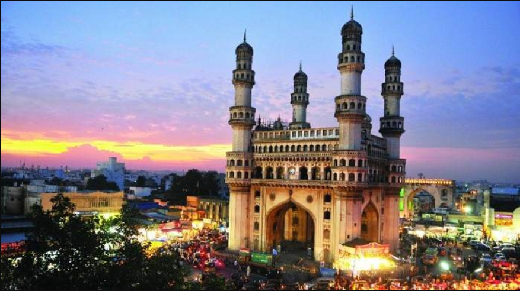
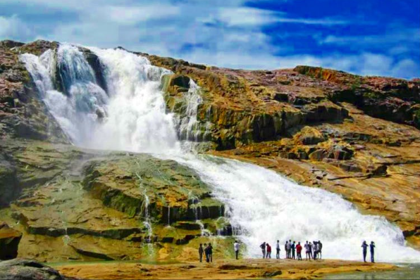
Kuntala Waterfall
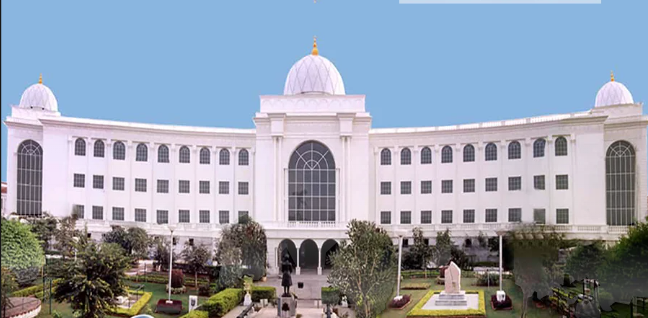
Salar Jung Museum
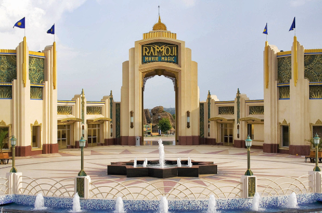
Ramoji Film City
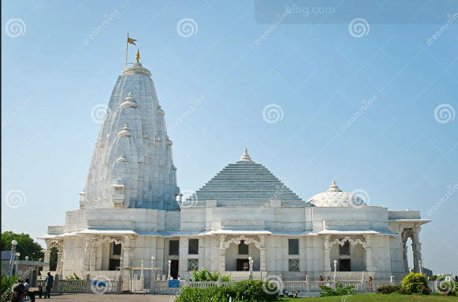
Birla Mandir
Cultural Highlights
Telangana's culture is a rich blend of traditions and modern influences, making it one of the most vibrant states in India.
The state is famous for Bathukamma and Bonalu festivals, which showcase its community spirit and devotion to local deities.
Its heritage includes the Kakatiya temples, the mighty Golconda Fort, and the iconic Charminar in Hyderabad, all of which stand as symbols of its glorious past.
Telangana is also known for Pochampally Ikat sarees and Cheriyal scroll paintings, reflecting its artistic excellence and traditional craftsmanship.
The world-renowned Hyderabadi biryani and the fusion of Urdu-Telugu literary traditions add to its unique cultural identity.
The state's folk arts are equally captivating, with Perini Shivatandavam, a warrior dance from the Kakatiya era, and Oggu Katha, a storytelling tradition accompanied by music, keeping alive the oral traditions of Telangana.
The rhythm of folk songs in Telugu, blended with Urdu poetry and Sufi music, creates a cultural harmony that is unique to this land.
Telangana is also celebrated for its handicrafts such as Bidriware metal craft, Nirmal paintings, and Dokra figurines, which showcase the creativity of local artisans and preserve centuries of cultural heritage.
Food is another cornerstone of Telangana's identity, with rustic delights like Sarva Pindi (spiced rice flour pancake), Jonna Rotte (sorghum bread), Kodi Kura (chicken curry), and sweets like Qubani ka Meetha and Double Ka Meetha reflecting the influence of Persian and Mughal cuisines.
RAMZAN
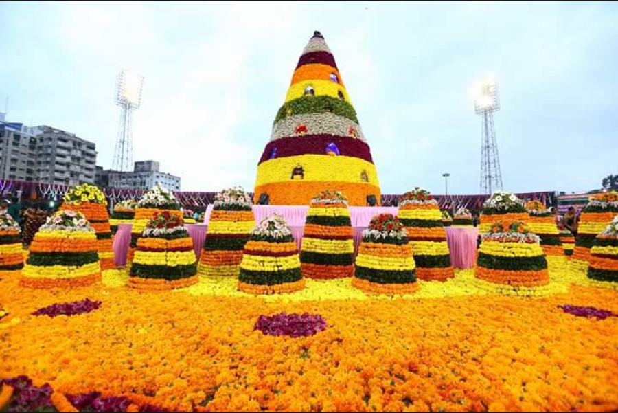
Bathukamma
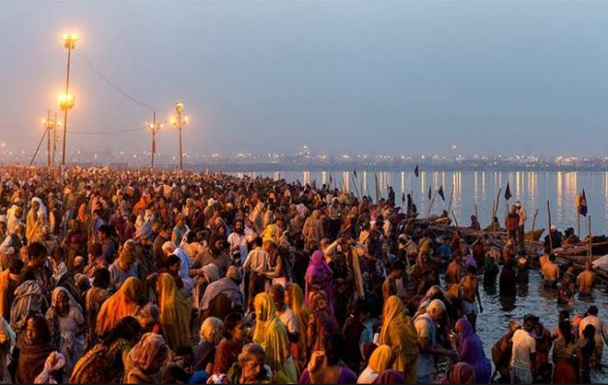
Sankranthi
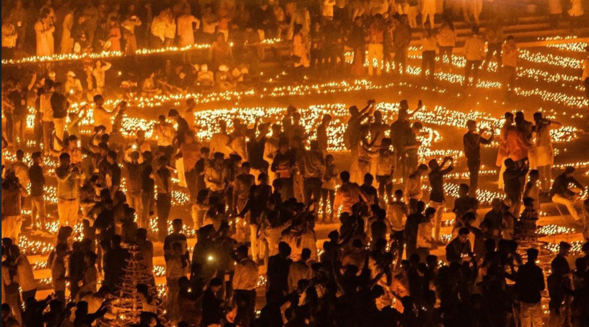
Diwali
HISTORY OF TELENGANA
Telangana's history dates back thousands of years, with its earliest roots traced to the Satavahana dynasty around 230 BCE, who ruled the Deccan region and made it a thriving center of trade and Buddhism.
The powerful Kakatiya dynasty, with their capital at Warangal, ruled from the 12th to 14th century and left behind magnificent architectural marvels like the Warangal Fort and the famous Thousand Pillar Temple.
After the fall of the Kakatiyas, the region came under the Bahmani Sultanate and later the Qutb Shahi dynasty, who founded Hyderabad in 1591 and built the iconic Charminar.
The Golconda Fort became the center of the world's most famous diamond trade, producing legendary gems like the Kohinoor and the Hope Diamond.
In the 18th century, the Asaf Jahi dynasty, popularly known as the Nizams, took control and ruled Hyderabad as one of the wealthiest princely states in British India.
The Nizams left behind a rich legacy of grand architecture, culture, and arts that still defines Hyderabad today.
HERE ARE SOME OF THE HISTORIC PLACES
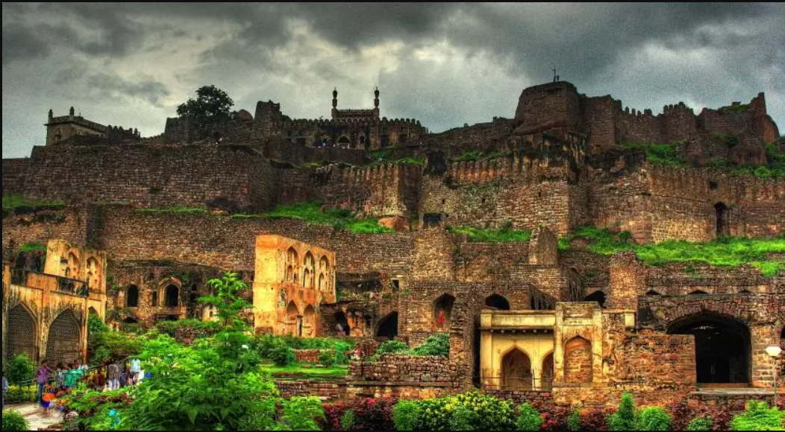
Golconda Fort
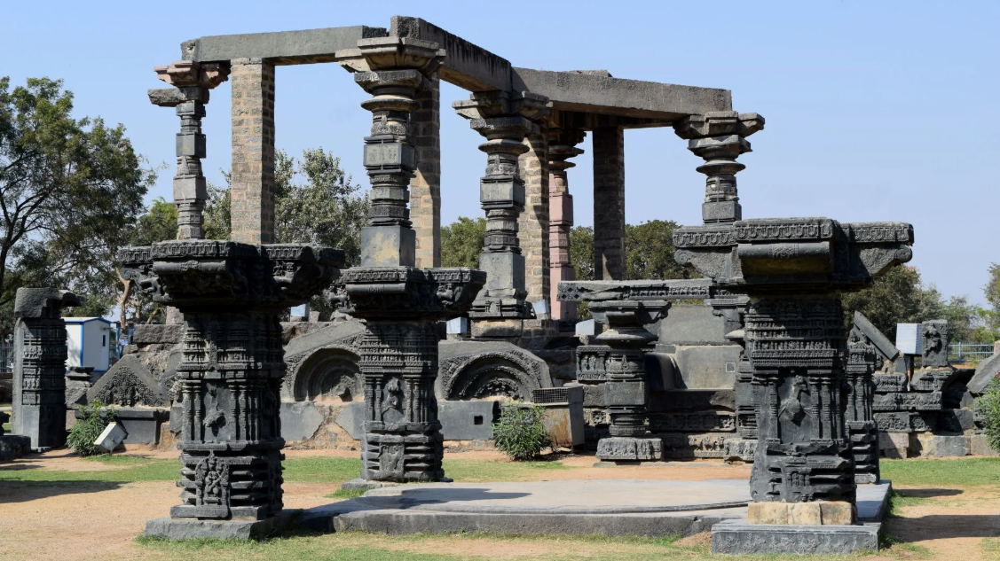
Warangal Fort
Charminar
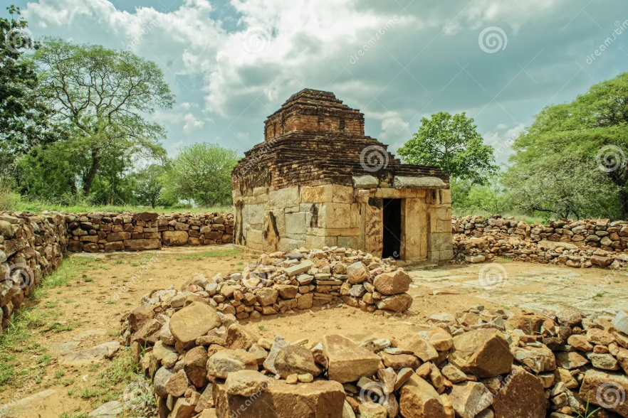
A FAMOUS TEMPLE
POPULAR CUISINES
Telangana food is bold, spicy, and deeply rooted in its culture.
Staples like rice, jowar, and bajra form the base of everyday meals, while the generous use of red chilies, tamarind, and sesame seeds gives dishes their fiery and tangy character.
The crown jewel is the Hyderabadi Biryani, slow-cooked with fragrant spices and tender meat, a dish that has earned global fame.
Sarva Pindi is a savory rice flour pancake that is crispy, wholesome, and uniquely Telangana.
Gongura Mutton, made with sorrel leaves, delivers a sour punch that perfectly balances the richness of meat.
Jonna Rotte, a sorghum flatbread, highlights the state's agrarian roots.
Mirchi ka Salan, a nutty and tangy gravy made with green chilies, is often served alongside biryani.
Kodi Kura (spicy chicken curry), Pachi Pulusu (raw tamarind soup), and Bagara Baingan (stuffed brinjal curry) each showcase bold flavors and traditional cooking methods.
Qubani ka Meetha, made from dried apricots, and Double Ka Meetha, a bread pudding with rich Mughal influence, add indulgence to festive occasions.
The cuisine reflects the fusion of local traditions with Persian and Mughal culinary styles, making Telangana's food a cultural experience celebrating its heritage, diversity, and love for spice.
Iconic Dishes
Hyderabadi Biryani — the crown jewel, slow-cooked with fragrant spices and meat.
Sarva Pindi — a savory rice flour pancake, a true Telangana original.
Gongura Mutton — tender meat cooked with sorrel leaves, giving it a unique sour punch.
Jonna Rotte — sorghum flatbread, a rustic everyday staple.
Mirchi ka Salan — a rich, nutty gravy made with green chilies.
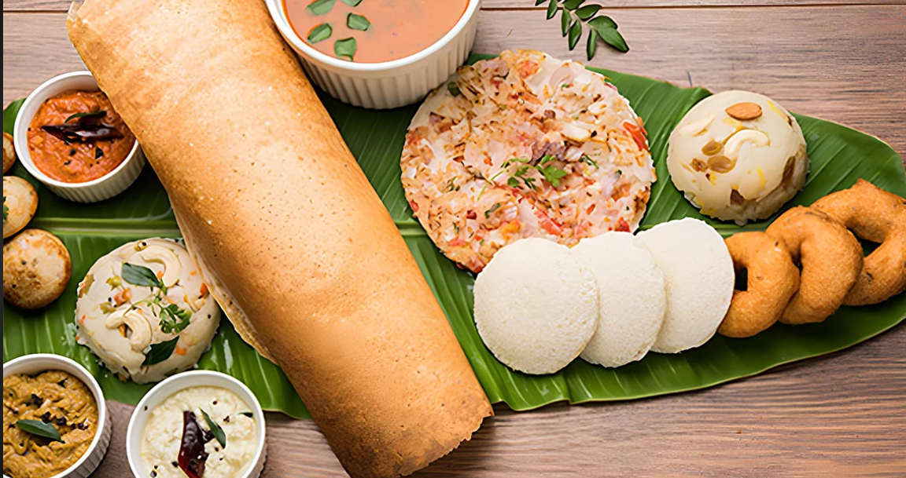
Dosa
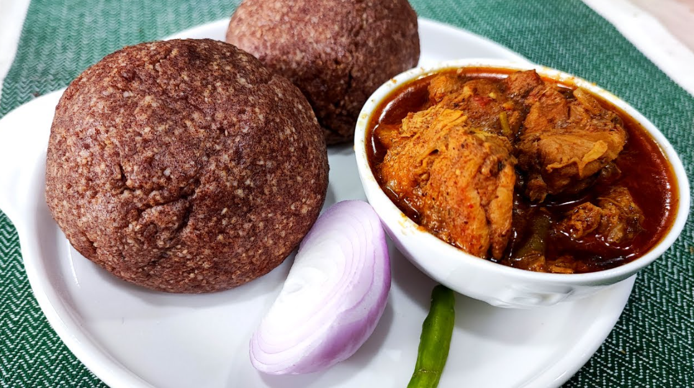
Ragi Mudde
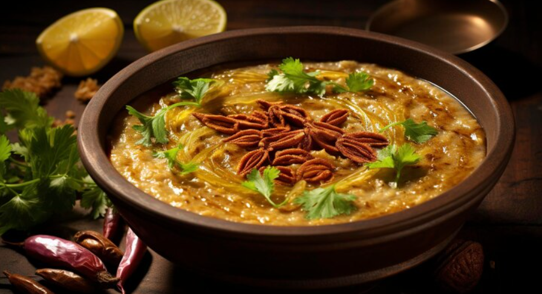
Haleem
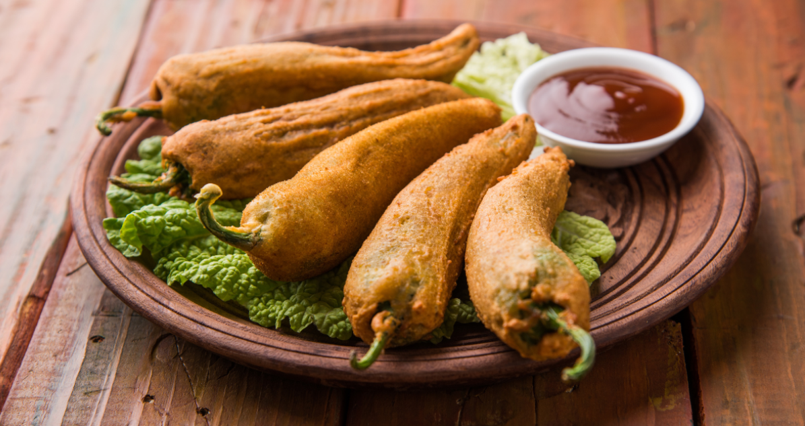
Bajji
Telangana: From Dynasties to Democracy
Satavahana Dynasty (~230 BCE) — Early rulers of the Deccan, known for trade and Buddhism.
Kakatiya Dynasty (12th–14th century) — Flourished with Warangal as capital, built Warangal Fort and Thousand Pillar Temple.
Bahmani Sultanate — Controlled the Deccan after Kakatiyas, paving way for later Islamic rule.
Qutb Shahi Dynasty (1591) — Founded Hyderabad, built Charminar, and expanded Golconda’s diamond trade.
Nizams (18th–20th century) — Wealthy princely rulers, left behind rich architecture and culture.
Hyderabad State Merger (1948) — Integrated into India after Operation Polo, ending Nizam rule.
Telangana Movement (1969–2014) — Agitations demanding separate statehood for Telangana region.
United Andhra Period — Telangana remained part of Andhra Pradesh, with repeated protests for autonomy.
Telangana State Formation (2014) — Officially became India’s 29th state after decades of struggle.
TRS/BRS Rule — Led by K. Chandrashekar Rao, spearheaded statehood and governed Telangana for nearly a decade.